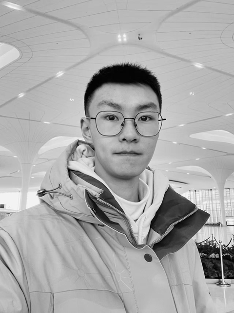
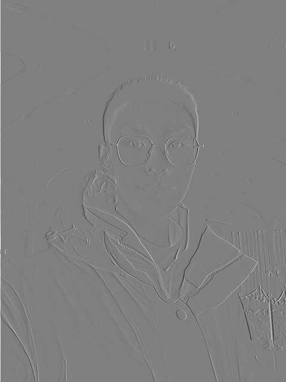
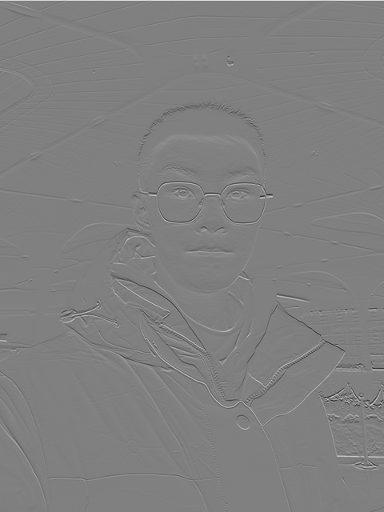

and Frequencies!
SYDE 671 · Assignment 2 · James Xie
PART 1.1:
CONVOLUTIONS
FROM SCRATCH!
I apply three filters to my selfie. I write convolution with four loops and two loops, then compare both with SciPy.
01 / A selfie through three filters




The original photo is 1279 × 1706 pixels. I use Pillow to make it grayscale and resize it to 480 × 640, keeping its shape. Lanczos is the resize method. I then store the pixels as float64 values from 0 to 1. All methods use this same input. The two handwritten filters use only NumPy.
Box = ones((9, 9)) / 81 · Dx = [1, −1] · Dy = [1, −1]T
The box filter averages a 9 × 9 area, so hair, glasses and jacket details look softer. Dx finds changes from left to right, making vertical edges stand out. Dy finds changes from top to bottom, making horizontal edges stand out. Away from the borders, they calculate I[y,x] − I[y,x−1] and I[y,x] − I[y−1,x].
I keep both positive and negative derivative values. In the pictures, gray means zero, brighter means positive and darker means negative. Both directions use the same scale, ±0.960784. This display step does not change the saved values.
02 / Convolution, written by hand
I flip the filter horizontally and vertically before multiplying and adding the pixels. Without the flip, the operation is correlation. The difference matters for filters that are not symmetric.
Both versions do O(HWkhkw) calculations. The four-loop version uses Python loops for the pixels and filter values. The two-loop version keeps the pixel loops but lets NumPy do each small multiplication and sum. Neither version calls a built-in convolution, FFT or filtering function.
Shared zero padding and kernel flip
def prepare(image, kernel):
"""Float64 avoids unsigned subtraction; padding matches SciPy 'same'."""
image = np.asarray(image, dtype=np.float64)
kernel = np.asarray(kernel, dtype=np.float64)
if image.ndim != 2 or kernel.ndim != 2 or not image.size or not kernel.size:
raise ValueError('Image and kernel must be nonempty 2D arrays.')
if not np.isfinite(image).all() or not np.isfinite(kernel).all():
raise ValueError('Image and kernel must contain finite values.')
kh, kw = kernel.shape
# Even kernels need one more zero before than after the image.
padded = np.pad(image, ((kh // 2, (kh - 1) // 2),
(kw // 2, (kw - 1) // 2)), mode='constant')
flipped = kernel[::-1, ::-1]
return image, padded, flipped
Four-loop implementation
def convolve_four_loops(image, kernel):
"""Two loops over output pixels and two over kernel coefficients."""
image, padded, flipped = prepare(image, kernel)
height, width = image.shape
kh, kw = flipped.shape
result = np.zeros((height, width), dtype=np.float64)
for y in range(height):
for x in range(width):
for ky in range(kh):
for kx in range(kw):
result[y, x] += padded[y + ky, x + kx] * flipped[ky, kx]
return result
Two-loop implementation
def convolve_two_loops(image, kernel):
"""Two loops over output pixels; NumPy multiplies and sums each patch."""
image, padded, flipped = prepare(image, kernel)
height, width = image.shape
kh, kw = flipped.shape
result = np.zeros((height, width), dtype=np.float64)
for y in range(height):
for x in range(width):
result[y, x] = np.sum(padded[y:y + kh, x:x + kw] * flipped)
return result
Boundary handling
I treat values outside the image as zero and keep the output size unchanged. The 9 × 9 filter needs four zeros on every side. For the 1 × 2 filter, I add one zero on the left. For the 2 × 1 filter, I add one above. This matches how SciPy centers these filters.
Zero padding makes the blurred image darker at the border. It also creates false derivative responses at the left and top edges, where the image meets zero. Reflecting the image at its border would give different results.
03 / Checking against SciPy
reference = scipy.signal.convolve2d(image, kernel,
mode="same", boundary="fill", fillvalue=0)
np.testing.assert_allclose(result, reference, rtol=1e-12, atol=1e-12)| Filter | Method | Median time (s) | Max absolute error |
|---|---|---|---|
| 9 × 9 box filter | Four loops | 10.616495 | 2.109e-15 |
| 9 × 9 box filter | Two loops | 1.260368 | 7.772e-16 |
| 9 × 9 box filter | SciPy | 0.035927 | 0.000e+00 |
| Horizontal derivative | Four loops | 0.302158 | 0.000e+00 |
| Horizontal derivative | Two loops | 1.177862 | 0.000e+00 |
| Horizontal derivative | SciPy | 0.003392 | 0.000e+00 |
| Vertical derivative | Four loops | 0.333264 | 0.000e+00 |
| Vertical derivative | Two loops | 1.179185 | 0.000e+00 |
| Vertical derivative | SciPy | 0.003837 | 0.000e+00 |
I run each method/filter 3 times and report the median time. A small 16 × 16 warm-up runs first. Timing includes padding and creating the output, but not reading or saving images. Every method uses the same 480 × 640 input. Here, the two-loop box filter is 8.42× faster than four loops. For very small filters, calling NumPy at every pixel can cost more time than a short Python loop. SciPy runs in compiled code. These times are specific to this computer.
All nine outputs match SciPy with rtol = atol = 1e-12. Five unit tests check filter direction, even-sized filters, signed differences from uint8 input, large filters, border pixels and simple identity/zero filters.
9 × 9 box filter

Horizontal derivative


Vertical derivative


What I learned
I learned that flipping the filter and handling the borders are both important. NumPy makes the inner calculation faster for the box filter, but it does not always help a tiny filter. I also learned to show negative derivatives around a gray midpoint.
I reused image loading, timing and figure code patterns from my Assignment 1 project, Perspective Through the Lens. I did not use its alignment algorithms.
Convolution source · Experiment source · Unit tests · Measurements · Raw arrays
Python 3.14.3 · NumPy 2.4.2 · SciPy 1.17.0 · Pillow 12.1.0